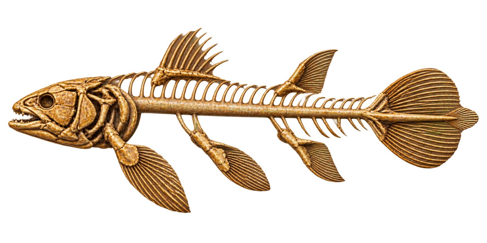
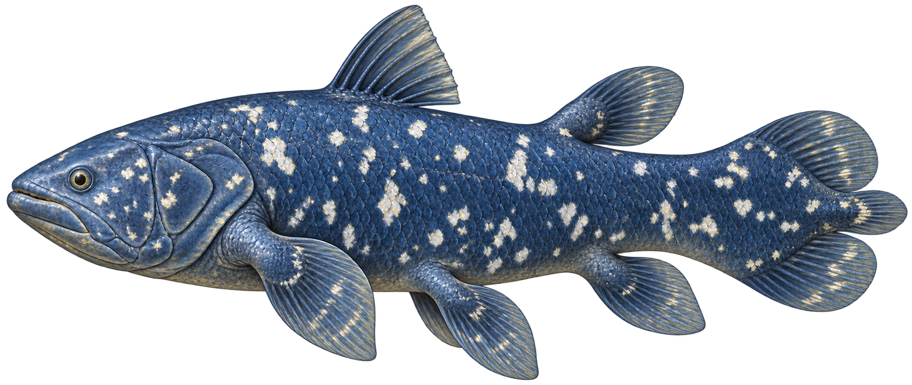

シーラカンス


せつめいと 2まいの がぞうは かくにんずみです。ゲームには まだ はんえいしていません。
しゃしんではなく、しりょうを もとに つくった イラストです。こっかくは なんこつなどの ぶぶんも おぎなっています。


せつめいと 2まいの がぞうは かくにんずみです。ゲームには まだ はんえいしていません。
しゃしんではなく、しりょうを もとに つくった イラストです。こっかくは なんこつなどの ぶぶんも おぎなっています。